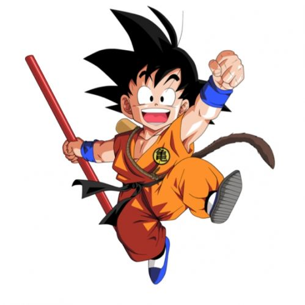
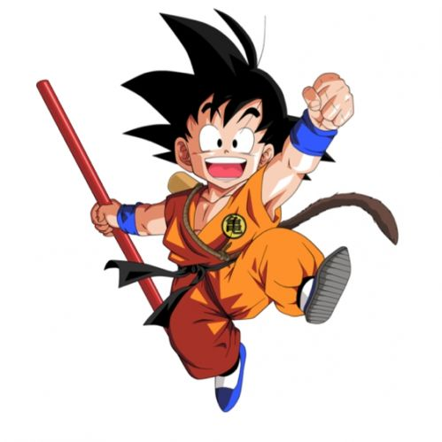

Dragon Ball es una de las sagas más icónicas del anime y el manga. Creada por Akira Toriyama, sigue la historia de Goku, un guerrero saiyajin que siempre busca superarse y proteger a sus amigos. Desde su primer encuentro con Bulma, Goku comienza una serie de aventuras en busca de las Dragon Balls, esferas mágicas que tienen el poder de conceder deseos
 

A lo largo de los años, hemos visto cómo Goku y sus compañeros han enfrentado enemigos poderosos, desde Freezer hasta Majin Buu, pasando por Cell y muchos más. A cada paso, la historia evoluciona, trayendo nuevos personajes, giros argumentales y momentos épicos que han dejado una huella en los fanáticos de todo el mundo. Sin duda, Dragon Ball ha sido una de las series que más ha influido en la cultura pop global

Pero Dragon Ball no es solo peleas. También trata sobre la amistad, la perseverancia y la evolución personal. Nos ha enseñado que siempre se puede ser más fuerte, no solo físicamente, sino como persona. A lo largo de las sagas, vemos cómo personajes como Vegeta, Piccolo y Gohan pasan por sus propios procesos de crecimiento, mostrando que los héroes no nacen, se hacen a través de esfuerzo y sacrificio